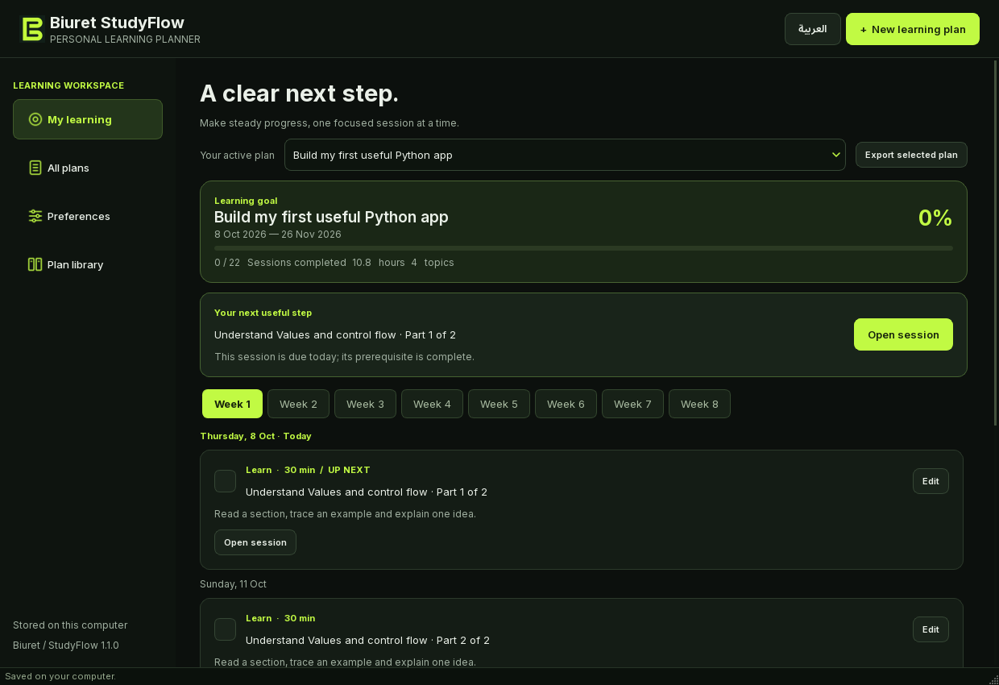

A goal. A plan. Your next step.
Less time deciding what to study. More time learning, practicing and remembering.
Made for a realistic routine.
StudyFlow divides work around your daily time, keeps prerequisite order and builds in review. The desktop application stores your plans and reflections locally; the English CLI uses the same engine.
This is a planning preview, not the desktop interface. It computes inside your browser without saving to your desktop database. Learning completion is self-assessed; this tool does not award certificates.

Make room for learning.
Choose a template or your own topics. Set a routine and an optional target date.
Your routine starts here.
Adjust the settings and preview a complete schedule, from the first lesson to the final project.
Plans can change. Keep your progress.
Move only unfinished sessions, using the same daily time and study days. Learning, practice and review gaps are preserved. Checked work is treated as completed by the new start date.
See proposed study days
Save this plan to keep checks on this device. Unsaved checks stay in this tab only. These are not verified learning records. Calendar exports contain all-day study reminders. Import the file yourself into your calendar. Downloaded previews are not desktop backups.
Prefer the terminal?
The English-only CLI creates plans, shows today’s sessions and records reflections. These are example commands, not a live shell. No command is executed here.
studyflow templates
studyflow plan create --template python --preview
studyflow today
studyflow progress